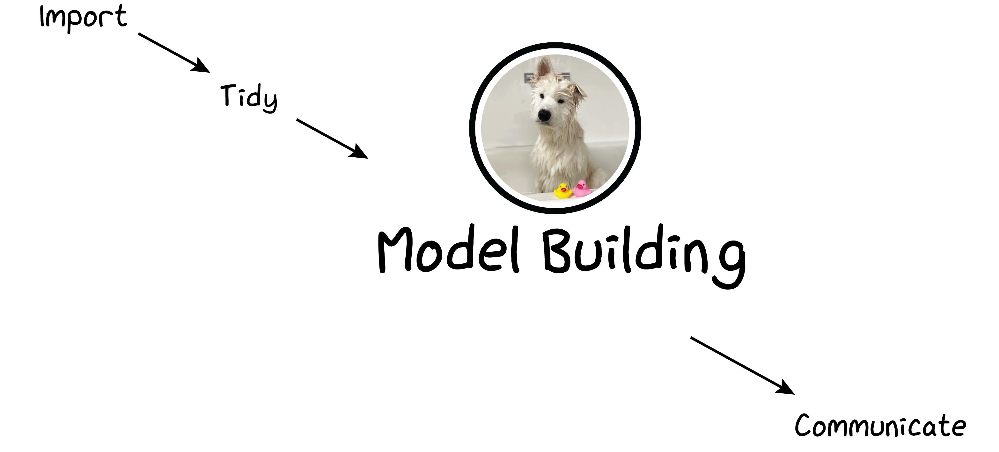
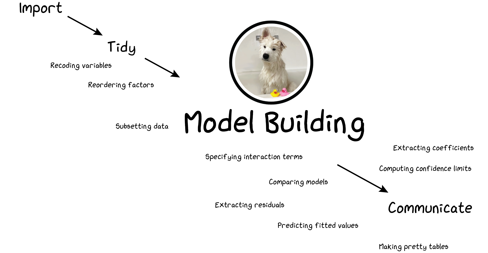

ID 529: Data Management and Analytic Workflows in R
Jarvis Chen
Thursday, January 11, 2024
Follow along
https://bit.ly/id529_regression_models
Clone the repository and open it as a R Project in your RStudio.
Open the id529\_day4\_regression\_models.R script. You can follow along, annotate, and/or run the code in your own R session.


Some goals for today
Practice reading someone else’s R code and annotating to help you understand what is going on
Review and consolidate some of the concepts we’ve been learning about
Use a dplyr workflow to prepare our dataset for analysis
Write a quick function (using concepts of functional programming)
Use ggplot to make a figure
Fit some regression models
lm() for linear regression
glm() for generalized linear regression
What arguments do these functions take?
What is contained in the resulting model objects?
Some goals for today
Learn how to extract output of interest from model objects
using base R
using broom::tidy, broom::augment, and broom::glance
Learn how to create some pretty tables
Learn about the gtsummary package
Priority List
What to prioritize in understanding the code in the example
Using dplyr code for data cleaning/management
Calling lm() and glm()
Using summary(), coef(), confint(), and broom::tidy() to extract and summarize coefficients.
Writing our own function to extract coefficients and output to a tibble
Using anova to compare models`
Using predict() and broom::augment() to extract predictions and residuals`
Using broom::glance to extract model fit statistics`
Data preparation
For this example, we will use the NHANES data from the NHANES package. Note that this is different from the nhanes_id529 data in the ID529data package.
df <- NHANES |># Remember that we have to restrict to people 25 and abovefilter(Age>=25) |># recoding of the variables we're going to usemutate(agecat =case_when( Age <35~"25-34",35<= Age & Age <45~"35-44", Age >=45& Age <55~"45-54", Age >=55& Age <65~"55-64", Age >=65& Age <75~"65-74", Age >=75~"75+"),# We want College Grad to be the reference category for education, so we'll# re-order the factor so that it is reversed from the way it came in the NHANES datasetEducation =factor(Education, levels=rev(levels(NHANES$Education))),# Here we collapse Hispanic and Mexican into the Hispanic categoryracecat =factor(case_when( Race1 %in%c("Hispanic", "Mexican") ~"Hispanic", Race1 %in%c("Asian", "Other") ~"Other Non-Hispanic", Race1 =="Black"~"Black Non-Hispanic", Race1 =="White"~"White Non-Hispanic"), levels =c("White Non-Hispanic", "Black Non-Hispanic", "Hispanic", "Other Non-Hispanic")) ) |># select just variables we are going to use in the analysisselect(ID, SurveyYr, Gender, Age, agecat, Education, racecat, BPSysAve, SmokeNow)
A basic call to lm()
You’ve probably seen something like this in a basic statistics class
This creates an object called lm_model1 where we are storing the results of having fit a linear regression model with BPSysAve as the dependent variable and categories of Education as the independent variables.
To see the actual results, we have to do something like
print(lm_model1)
Call:
lm(formula = BPSysAve ~ factor(Education), data = df)
Coefficients:
(Intercept) factor(Education)Some College
118.563 3.750
factor(Education)High School factor(Education)9 - 11th Grade
5.140 4.688
factor(Education)8th Grade
7.921
Summarizing the model object
summary(lm_model1)
Call:
lm(formula = BPSysAve ~ factor(Education), data = df)
Residuals:
Min 1Q Median 3Q Max
-45.252 -11.563 -1.703 8.686 103.686
Coefficients:
Estimate Std. Error t value Pr(>|t|)
(Intercept) 118.5634 0.3907 303.467 < 2e-16 ***
factor(Education)Some College 3.7503 0.5588 6.712 2.09e-11 ***
factor(Education)High School 5.1401 0.6190 8.303 < 2e-16 ***
factor(Education)9 - 11th Grade 4.6882 0.7268 6.451 1.20e-10 ***
factor(Education)8th Grade 7.9206 0.9414 8.414 < 2e-16 ***
---
Signif. codes: 0 '***' 0.001 '**' 0.01 '*' 0.05 '.' 0.1 ' ' 1
Residual standard error: 17.28 on 6319 degrees of freedom
(247 observations deleted due to missingness)
Multiple R-squared: 0.01887, Adjusted R-squared: 0.01824
F-statistic: 30.38 on 4 and 6319 DF, p-value: < 2.2e-16
Other ways of summarizing the model
anova(lm_model1)
Analysis of Variance Table
Response: BPSysAve
Df Sum Sq Mean Sq F value Pr(>F)
factor(Education) 4 36277 9069.3 30.376 < 2.2e-16 ***
Residuals 6319 1886669 298.6
---
Signif. codes: 0 '***' 0.001 '**' 0.01 '*' 0.05 '.' 0.1 ' ' 1
Exploring the model object more fully
class(lm_model1)
[1] "lm"
It’s an object of class “lm”, but it’s also a list in that it has various elements of different types and different lengths
Note the difference between the list item called coefficients in the lm_model1 object and the list item called coefficients in the summary(lm_model1) object
lm_model1$coefficients
(Intercept) factor(Education)Some College
118.563395 3.750341
factor(Education)High School factor(Education)9 - 11th Grade
5.140080 4.688178
factor(Education)8th Grade
7.920635
summary(lm_model1)$coefficients
Estimate Std. Error t value Pr(>|t|)
(Intercept) 118.563395 0.3906963 303.466895 0.000000e+00
factor(Education)Some College 3.750341 0.5587681 6.711802 2.089606e-11
factor(Education)High School 5.140080 0.6190317 8.303420 1.225813e-16
factor(Education)9 - 11th Grade 4.688178 0.7267768 6.450643 1.196256e-10
factor(Education)8th Grade 7.920635 0.9413995 8.413681 4.864442e-17
Extracting quantities of interest
# point estimatescoef(lm_model1)
(Intercept) factor(Education)Some College
118.563395 3.750341
factor(Education)High School factor(Education)9 - 11th Grade
5.140080 4.688178
factor(Education)8th Grade
7.920635
Let’s write our own function to extract point estimates and 95% CI from the model object.
f_get_coefficients <-function(model){# grab the names of the effects in the model get_names <-names(coef(model))# grab the coefficients and the 95% confidence limits# and put them in a matrix estimates_and_cis <-cbind(coef(model), confint(model))# put everything into a tibble and return itreturn(tibble(term = get_names, estimate = estimates_and_cis[,1],lci = estimates_and_cis[,2],uci = estimates_and_cis[,3]))}
Though most regression functions will automatically drop observations with NA, sometimes we may want to explicitly filter out missing observations on any of the covariates we are going to include while model building to make sure that we can compare models based on the same number of observations.
When we specify the interaction in the formula using * we get the main effects of Gender and factor(racecat) as well as the interactions
Models with interactions
Another way to specify the interaction is to use the interaction() function to create a categorical variable representing the cross-classified categories
Useful when we want to compare to a common referent category.
Education Gender agecat racecat
1 8th Grade female 45-54 Black Non-Hispanic
2 9 - 11th Grade female 45-54 Black Non-Hispanic
3 High School female 45-54 Black Non-Hispanic
4 Some College female 45-54 Black Non-Hispanic
5 College Grad female 45-54 Black Non-Hispanic
You may recall from statistics classes that we can compare two nested linear regression models.
anova(lm_model4b, lm_model3)
Analysis of Variance Table
Model 1: BPSysAve ~ factor(Education) + factor(agecat) + interaction(Gender,
factor(racecat))
Model 2: BPSysAve ~ factor(Education) + factor(agecat) + Gender + factor(racecat)
Res.Df RSS Df Sum of Sq F Pr(>F)
1 6307 1556063
2 6310 1557850 -3 -1787.3 2.4148 0.06461 .
---
Signif. codes: 0 '***' 0.001 '**' 0.01 '*' 0.05 '.' 0.1 ' ' 1
Some take aways
Like everything in R, when we fit regression models we assign the results to an object that we can then manipulate to extract the most relevant pieces of output
These are essentially list objects that contain different elements
Don’t be afraid to poke around and explore what are the elements of the model object.
We can often write our own functions to help us extract the elements we’re interested in.
The broom package, by David Robinson, has lots of powerful functions to turn models into tidy data. Once you have tidy data, you can manipulate them using many of the techniques you’ve been learning for managing dataframes and tibbles.
Further reading
Introduction to broom https://cran.r-project.org/web/packages/broom/vignettes/broom.html
broom.mixed documentation (useful if you are fitting random effects or mixed models) https://cran.r-project.org/web/packages/broom.mixed/vignettes/broom_mixed_intro.html